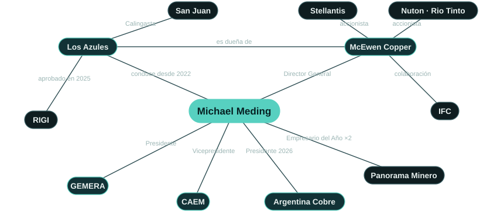
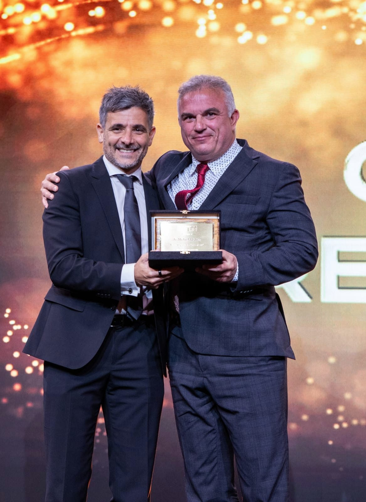
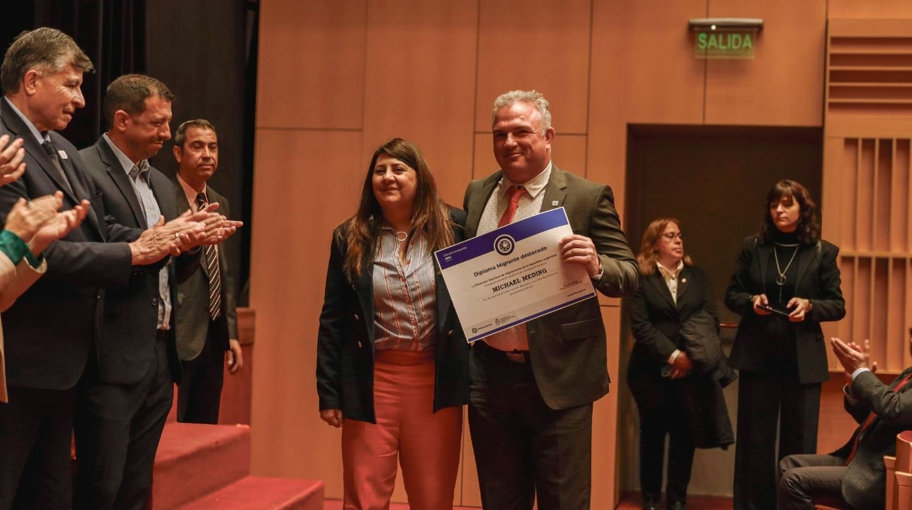

Novedad: préstamo a plazo de US$240 millones
El 27 de agosto de 2026 McEwen Copper cerró un préstamo senior garantizado a plazo de US$240 millones. Los fondos se destinan a la ingeniería y las obras tempranas de Los Azules, de cara a la decisión final de inversión, prevista para mediados de 2027.[7]
This financing reflects our lenders' confidence in Los Azules and in the progress Argentina has made over the past two and a half years. […] We are proud to be building Los Azules here.Este financiamiento refleja la confianza de nuestros prestamistas en Los Azules y en los avances que la Argentina logró en los últimos dos años y medio. […] Estamos orgullosos de construir Los Azules aquí. (Traducción de la declaración original en inglés)
Condiciones del préstamo, prestamistas e historial completo de financiamiento →
Resumen
Los Azules es el décimo mayor pórfido de cobre sin desarrollar del mundo por recursos minerales totales y se encuentra en la alta cordillera de Calingasta, San Juan. Michael Meding asumió su conducción en febrero de 2022, primero como vicepresidente y gerente general y, desde 2026, como director general de McEwen Copper. En su primer año el equipo pasó de 32 a 142 empleados directos, y en las tres campañas de perforación que desembocaron en el estudio de factibilidad se perforaron más de 120.000 metros. En esos mismos años sumó a Stellantis y a Nuton, de Rio Tinto, como inversores estratégicos, firmó un acuerdo de colaboración con la IFC y designó a Société Générale como asesor financiero para la deuda del proyecto. La decisión final de inversión está prevista para mediados de 2027, con el objetivo de obtener el primer cátodo comercial en 2030.[1, 5, 7, 12–16]
Nació en Düsseldorf y terminó el colegio en la Alfred Krupp Schule de Essen, en el Ruhr, donde su abuelo trabajó bajo tierra como minero del carbón. Su carrera empezó en PwC, que lo destinó a Suiza; se quedó siete años en ese país e ingresó a Novartis a través de su programa de desarrollo de CFO. Su traslado a Chile marcó el inicio de más de quince años en América Latina, con cargos de CFO en empresas multinacionales en Chile y la Argentina. Llegó a la minería en 2010 como CFO de las operaciones argentinas de Barrick Gold, donde tuvo un rol clave en la recuperación y la extensión de la vida útil de Veladero y en la alianza estratégica con Shandong Gold. En Trafigura fue CFAO de una operación minera polimetálica. Trabajó en ocho países de Europa y América, y vive entre San Juan y Toronto.[2, 3, 17–19]
Preside GEMERA, el primer extranjero en ocupar ese cargo, es vicepresidente de CAEM e integra el comité ejecutivo de la Cámara Minera de San Juan. Estuvo al frente de Argentina Cobre, la conferencia del cobre del país, como presidente honorario en 2025 y como presidente en 2026. Es licenciado (BSc) por la Ruhr-Universität Bochum, tiene sendos MBA de HHL Leipzig y de Indiana University of Pennsylvania, cursa la Maestría en Gestión del Negocio Minero en la Universidad Católica de Cuyo y es primer autor de un estudio de 2026 sobre la licencia social para operar en la minería latinoamericana, publicado en Veredas do Direito.[10, 20–24]

Trayectoria
Lo que logró en Los Azules y la experiencia que aportó al proyecto.
Capital para una mina nueva
Armó la base de capital de un proyecto de cobre greenfield: dos accionistas estratégicos, la IFC, un asesor para la deuda del proyecto y un préstamo a plazo de US$240 millones.
- Fastmarkets: con Meding a bordo, McEwen Copper captó US$453 millones y sumó a Stellantis y Rio Tinto.[25]
- Nuton, de Rio Tinto, invirtió US$100 millones en total; Stellantis ingresó como accionista estratégico.[26]
- Acuerdo de colaboración con la IFC, septiembre de 2025.[14]
- Société Générale designado asesor financiero para la deuda del proyecto, mayo de 2026.[15]
- Préstamo senior garantizado a plazo de US$240 millones cerrado en agosto de 2026.[7]
Permisos y políticas públicas
Obtuvo la Declaración de Impacto Ambiental de Los Azules y lo convirtió en el primer proyecto de cobre aprobado en el RIGI.
- Declaración de Impacto Ambiental para construcción y operación otorgada en diciembre de 2024; la evaluación técnica provincial se completó en menos de un año.[27]
- La Resolución 1553/2025 admite Los Azules en el RIGI con un plan de US$2.672 millones.[28]
- LA NACION: el primer emprendimiento de minería de cobre aprobado en el régimen.[6]
- En sus palabras: “Estructuramos y ejecutamos la solicitud de adhesión al RIGI”.[26]
Del recurso al estudio de factibilidad
Sacó adelante una evaluación económica preliminar actualizada y un estudio de factibilidad, y llevó el proyecto a la ingeniería de detalle.
- Estudio de factibilidad, octubre de 2025: VAN8 después de impuestos US$2.900 millones, TIR 19,8%.[5]
- Perforación de factibilidad completada con 70.000 metros en la temporada 2023/24.[29]
- 2T 2026: “Están adjudicados los principales paquetes de proceso: la planta SX-EW, la planta de ácido sulfúrico y el sistema de trituración”.[30]
Un equipo sanjuanino
Formó el equipo del proyecto en San Juan, con gente de San Juan.
Liderazgo sectorial
Una voz habitual del cobre y la exploración argentinos en los grandes foros de la minería y la inversión.
- Presidente de GEMERA desde 2024, el primer extranjero en el cargo.[20]
- Presidente de Argentina Cobre 2026; presidente honorario en 2025.[23]
- Conferencias centrales y paneles en PDAC, LME Week, CESCO, Benchmark, Jefferies y el Precious Metals Summit, entre muchos otros, y cientos de presentaciones a inversores sobre Los Azules.
Finanzas mineras desde adentro
Dos décadas en finanzas corporativas y mineras antes de Los Azules.
La IA en el negocio
Puso la IA al servicio de la exploración y capacitó a todo el equipo en su uso.
Investigación
Publica investigaciones sobre la licencia social para operar en la minería latinoamericana.
Los Azules en síntesis
Los Azules es un pórfido de cobre en la cordillera de Calingasta, San Juan. El estudio de factibilidad de octubre de 2025 contempla una operación a cielo abierto, con lixiviación en pilas y SX-EW, que produciría cátodo de cobre de 99,99% en la propia mina, sin envíos de concentrado, sin dique de colas y con energía 100% renovable. Las reservas probadas y probables contienen 10.200 millones de libras de cobre (fecha efectiva: 3 de septiembre de 2025) y sustentan una vida de la mina de 21 años en el caso base. Fue el primer proyecto de cobre admitido en el RIGI. Los recursos, los indicadores económicos, el financiamiento y el escenario de crecimiento se detallan en la página de Los Azules.[5, 6, 35]
Hitos de Los Azules, 2022–2030
Desde que asumió la conducción en febrero de 2022.[1, 4, 5, 7, 12, 14–16, 28, 35]
- 2022febSe suma a McEwen Copper para conducir Los Azules
- 2022agoNuton, de Rio Tinto, ingresa como inversor estratégico
- 2022dicEl equipo pasa de 32 a 142 empleados directos en un año
- 2023febStellantis ingresa como accionista estratégico
- 2023junEvaluación económica preliminar actualizada
- 2023novMejor Exploradora del Año
- 2024mayPerforación de factibilidad completada: 70.000 metros en 2023/24, tras 39.000 metros en 2022/23
- 2024agoMemorando de entendimiento con YPF Luz para energía 100% renovable
- 2024dicDeclaración de Impacto Ambiental para construcción y operación
- 2025junPrimeros cátodos de cobre con mineral de Los Azules, a escala de laboratorio
- 2025sepAcuerdo de colaboración con la IFC; aprobación en el RIGI de un plan de inversión de US$2.670 millones, la primera para un proyecto de cobre
- 2025octEstudio de factibilidad publicado
- 2026marLos Azules recibe un reconocimiento de AmCham Argentina en Argentina Week, en Nueva York
- 2026maySociété Générale es designado asesor financiero para el financiamiento con deuda del proyecto
- 2026agoCierre del préstamo senior garantizado a plazo de US$240 millones con Sprott, Rob McEwen y otros prestamistas
- 2027med.Decisión final de inversión y financiamiento completo del proyecto (objetivo)
- 2030Primer cátodo de cobre comercial (objetivo)
Distinciones


| Año | Distinción | Otorgada por | Otorgada a |
|---|---|---|---|
| 2025 | Empresario Minero del Año La Noche de las Distinciones, Argentina: Oro, Plata y Cobre, Buenos Aires, diciembre de 2025. fuente ↗ | Panorama Minero | Personal |
| 2024 | Empresario Minero del Año Elegido por el comité de Panorama Minero por combinar “una visión estratégica con una sólida capacidad técnica”. Buenos Aires, diciembre de 2024. fuente ↗ | Panorama Minero | Personal |
| 2024 | Migrante Destacado “Diploma Migrante destacado” de la Dirección Nacional de Migraciones, entregado en el Día del Inmigrante en el acto oficial de San Juan del 4 de septiembre de 2024, por su aporte al desarrollo de la Argentina y a su pluralidad cultural. fuente ↗ | Dirección Nacional de Migraciones | Personal |
| 2026 | Mención especial, Argentina Week AmCham Argentina reconoció a Andes Corporación Minera por su compromiso con la inversión productiva en el marco del RIGI. La entregó en Nueva York el ministro de Economía, Luis Caputo, al cierre de Argentina Week, en marzo de 2026; la recibió junto a Rob McEwen. fuente ↗ | AmCham Argentina | Los Azules |
| 2026 | Empresa Minera Destacada en RSE Premios Argentina Mining, Salta, septiembre de 2026. fuente ↗ | Argentina Mining | Los Azules |
| 2026 | Sello Compromiso por la Alfabetización Por acompañar el plan provincial de alfabetización Comprendo y Aprendo. San Juan, julio de 2026. fuente ↗ | Gobierno de San Juan | Los Azules |
| 2025 | Premio INVERTIR, Minería Recibido en nombre de McEwen Copper en el XIII Fórum Empresarial de Buenos Aires, diciembre de 2025. fuente ↗ | LIDE Argentina | Los Azules |
| 2023 | Mejor Exploradora del Año Por la campaña de exploración 2022–23 en Calingasta. Buenos Aires, noviembre de 2023. fuente ↗ | Panorama Minero | Los Azules |
Cargos y carrera
Cargos actuales
- Director GeneralMcEwen Copperal frente de Los Azules desde febrero de 2022
- Presidente y Gerente GeneralAndes Corporación Minera (Los Azules)
- PresidenteGEMERAdesde 2024 · primer extranjero en el cargo
- VicepresidenteCAEM2025–2027 · por Andes Corporación Minera
- Miembro del comité ejecutivoCámara Minera de San Juan2025–2027
- PresidenteArgentina Cobre2026 · presidente honorario en 2025
- Presidente HonorarioExpo San Juan Minera 2026
Carrera
- PwCConsultoría en producción y finanzas; siete años en SuizaSuiza
- NovartisPrograma de desarrollo de CFO; responsable de finanzas de una unidad de negocio internacional; luego ChileSuiza · Chile
- Empresas multinacionalesCargos de CFO en Chile y la ArgentinaChile · Argentina
- Barrick GoldCFO de las operaciones argentinas desde 2010: recuperación de Veladero, extensión de la vida útil, alianza con Shandong GoldSan Juan
- TrafiguraCFAO de una operación minera polimetálicaAmérica Latina
- McEwen CopperConduce Los Azules desde febrero de 2022; director general desde 2026San Juan · Toronto
Formación
- BSc, Ruhr-Universität Bochum
- MBA, HHL Leipzig Graduate School of Management
- MBA, Indiana University of Pennsylvania
- Maestría en Gestión del Negocio Minero (en curso), Universidad Católica de Cuyo
Investigación
- Meding, M., Arias-Valle, M. B., & Ocampo Abadía, A. A. (2026). “The Legitimacy Trilemma: Strategic Communication, Crisis of Trust, and the Maintenance of the Social License to Operate in Large-Scale Mining in Latin America.” Veredas do Direito, 23(1), e233939. doi:10.18623/rvd.v23.n1.3939
- Meding, M. E., Arias Valle, M. B., & Ocampo Abadía, A. (2025). “Mapping the Knowledge Landscape of Social License to Operate in Mining: A Bibliometric Study.” SSRN preprint. doi:10.2139/ssrn.5407877
En sus palabras
I’ve learned how to get things done in Argentina. Sometimes it is a matter of persistence, other times it is more about relationships than about formalities.Aprendí a sacar las cosas adelante en la Argentina. A veces es cuestión de persistencia; otras, más de relaciones que de formalidades.
We believe in the future of Argentina. It’s in a good spot geopolitically and has what the world needs.Creemos en el futuro de la Argentina. Está bien posicionada geopolíticamente y tiene lo que el mundo necesita.
Queremos ser un buen vecino y que digan que somos un ejemplo de cómo se debería hacer minería.Hasta diciembre del 2023, todo el mundo decía qué lástima que el proyecto está en Argentina. Hoy la respuesta es la opuesta: qué interesante que está en Argentina.Todos mis geólogos están trabajando hoy tanto con IA como con machine learning para multiplicar sus capacidades de análisis.Nada funciona sin minería: los zapatos, el celular, el saco, el micro.Our main challenge isn’t engineering … it’s mobilizing the necessary funding so we can move at the pace we’d like.Nuestro principal desafío no es la ingeniería … es movilizar el financiamiento necesario para avanzar al ritmo que nos gustaría.
La confianza se gana en gramos y se pierde en kilos.Escenarios recientes
| Año | Fecha | Ciudad | Evento | Participación |
|---|---|---|---|---|
| 2026 | 28–30 oct | Buenos Aires · Mendoza | 5th Argentina Critical Minerals Summit Próximo | Orador confirmado |
| 2026 | 23 sep | Beaver Creek | Precious Metals Summit | Entrevista con Investing News Network |
| 2026 | sep | Buenos Aires | X Foro PYMES Italia–América Latina | “Minerales críticos y desarrollo federal”, junto a los gobernadores de San Juan, Jujuy y Catamarca |
| 2026 | sep | Argentina | Forbes Mining Summit | “En Foco”, en el escenario con Fernando Heredia |
| 2026 | Santiago de Chile | Argentine Embassy in Chile | “Perspectivas de la Minería en la Región”, con las autoridades mineras de ambos países | |
| 2026 | ago | Buenos Aires | LA NACION, Minería | En diálogo con José Del Rio |
Cobertura reciente
- Forbes ArgentinaCon el uso de IA, Los Azules espera descubrir nuevos recursos y aumentar la vida útil del proyecto
- Neura · Alejandro FantinoCaso 004: Michael Meding (McEwen Copper, Proyecto Los Azules) Liderologías - Filosofía del liderazgo
- LA NACIONMichael Meding: “La Argentina podría estar entre los cinco mayores productores de cobre del mundo”
- Benchmark SourceLos Azules Copper Project
- ReutersCobre y cerveza: ejecutivo minero alemán abre fábrica en Argentina para saciar su sed
- MDZLos Azules acelera hacia 2027: los detalles del plan de inversión de US$ 4.000 millones
Preguntas y respuestas
¿Quién es Michael Meding?
Un ejecutivo minero alemán que conduce el proyecto de cobre Los Azules, en San Juan, Argentina, desde febrero de 2022 y es director general de McEwen Copper. Preside GEMERA y fue elegido Empresario Minero del Año en 2024 y 2025.[1, 2, 8, 9]
¿Qué logró en Los Azules?
Bajo su conducción, Los Azules obtuvo su Declaración de Impacto Ambiental (diciembre de 2024), publicó su estudio de factibilidad (octubre de 2025), fue el primer proyecto de cobre aprobado en el RIGI y cerró un préstamo a plazo de US$240 millones (agosto de 2026). Stellantis y Nuton, de Rio Tinto, ingresaron como accionistas estratégicos y la IFC firmó un acuerdo de colaboración.[4–7, 12, 14]
¿Qué distinciones recibió Michael Meding?
Empresario Minero del Año 2024 y 2025 (Panorama Minero) y el Diploma Migrante destacado de la Dirección Nacional de Migraciones en 2024. Bajo su conducción Los Azules recibió el premio a la Mejor Exploradora del Año 2023, el Premio INVERTIR de LIDE en Minería 2025, una mención especial de AmCham Argentina en 2026 y otras distinciones.[8, 9, 26, 36]
¿Qué es GEMERA?
El Grupo de Empresas Mineras Exploradoras de la República Argentina, la cámara que reúne a las empresas de exploración. Meding lo preside desde 2024, como primer extranjero en el cargo, y sostiene que la Argentina debe triplicar su inversión en exploración.[10, 20, 37]
¿Cuál es su trayectoria profesional?
Finanzas corporativas y mineras: PwC y Novartis en Suiza, cargos de CFO en multinacionales en Chile y la Argentina, CFO de las operaciones argentinas de Barrick Gold desde 2010, incluida Veladero, y CFAO de una operación polimetálica de Trafigura.[2, 19]
¿Dónde vive Michael Meding?
Entre San Juan, Argentina, donde se gestiona Los Azules, y Toronto, donde está la oficina central de McEwen Copper.[38]
¿Qué idiomas habla?
Alemán, inglés y español.[2]
Referencias
- 1GlobeNewswire. McEwen Copper Announces Management Addition. 2022-02-17. www.globenewswire.com
- 2McEwen Inc.. Management team: Michael Meding, Managing Director, McEwen Copper. 2026. www.mcewenmining.com
- 3Tiempo de San Juan. Cómo piensa, qué hace y los secretos del gerente de Los Azules. 2023-05-07. www.tiempodesanjuan.com
- 4McEwen Inc. (SEC 8-K). Los Azules receives environmental approval for construction and operation. 2024-12-03. www.sec.gov
- 5McEwen Inc.. Los Azules Feasibility Study Confirms Economically Robust Copper Project With Leading ESG Performance. 2025-10-07. www.mcewenmining.com
- 6LA NACION. El Gobierno aprobó un nuevo proyecto RIGI: una minera invertirá US$2700 millones en San Juan. 2025-09-26. www.lanacion.com.ar
- 7McEwen Inc.. McEwen Copper Completes US$240 Million Term Loan to Advance Los Azules Toward Final Investment Decision. 2026-08-27. www.mcewenmining.com
- 8Minería & Desarrollo. Eligieron a Michael Meding de Los Azules como el Empresario Minero del Año. 2024-12-05. www.mineriaydesarrollo.com
- 9Diario de Cuyo. El vicepresidente de McEwen Copper, Michael Meding, fue elegido como 'Empresario Minero del Año 2025'. 2025-12-04. www.diariodecuyo.com.ar
- 10EconoJournal. Michael Meding, nuevo presidente de Gemera. 2024-10-07. econojournal.com.ar
- 11McEwen Inc.. Los Azules project page. 2026. www.mcewenmining.com
- 12Stellantis. Stellantis announces strategic copper investment in Argentina. 2023-02-27. www.stellantis.com
- 13GlobeNewswire. McEwen Copper announces an additional US$35 million investment by Nuton. 2024-10-24. www.globenewswire.com
- 14IFC, World Bank Group. IFC supports McEwen Copper on sustainable financing for Los Azules. 2025-09-24. www.ifc.org
- 15McEwen Inc.. McEwen Copper appoints Société Générale as financial advisor for project debt financing of Los Azules. 2026-05-14. www.mcewenmining.com
- 16LinkedIn, Michael Meding. 2022 achievements at Los Azules (team 32 to 142). 2023-01-02. www.linkedin.com
- 17LinkedIn, Michael Meding. Abitur at the Alfred Krupp Schule, Essen. 2026-01-23. www.linkedin.com
- 18LinkedIn, Michael Meding. My grandfather, an underground coal miner in the Ruhr. 2026-01-23. www.linkedin.com
- 19Mining Press. Michael Meding (Barrick): San Juan, por la minería, más independiente. 2014-09-08. miningpress.com
- 20Handelsblatt. Global Risk: Das erwartet Investoren in Mileis Argentinien. 2024-12-10. www.handelsblatt.com
- 21CAEM. La Cámara Minera de San Juan eligió nuevas autoridades. 2025-07-07. caem.com.ar
- 22LinkedIn, Michael Meding. Honorary President, Argentina Cobre 2025. 2025-08-05. www.linkedin.com
- 23LinkedIn, Los Azules. Los Azules en Expo San Juan Minera 2026. 2026-05-07. www.linkedin.com
- 24Veredas do Direito. The Legitimacy Trilemma (Meding, Arias-Valle, Ocampo Abadía, 2026). 2026-01-09. doi.org
- 25Fastmarkets. Goldcorp founder Rob McEwen bets big on Argentine copper. 2025-06-03. www.fastmarkets.com
- 26LinkedIn, Michael Meding. RIGI Champion, AmCham Argentina. 2026-03-12. www.linkedin.com
- 27Minería & Desarrollo. El proyecto de cobre Los Azules en San Juan obtuvo luz verde para su explotación. 2024-12-03. www.mineriaydesarrollo.com
- 28Boletín Oficial de la República Argentina. Resolución 1553/2025, Ministerio de Economía: Proyecto Los Azules admitted to RIGI. 2025-10-14. www.boletinoficial.gob.ar
- 29LinkedIn, Michael Meding. Feasibility drilling completed: 70,000 metres this season. 2024-05-16. www.linkedin.com
- 30The Motley Fool (transcript). McEwen (MUX) Q2 2026 earnings call transcript. 2026-08-13. www.fool.com
- 31Minería & Desarrollo. Los Azules invirtió USD 83,9 millones en los últimos 16 meses. 2026-06-08. www.mineriaydesarrollo.com
- 32Forbes Argentina. Con el uso de IA, Los Azules espera descubrir nuevos recursos. 2026-09-03. www.forbesargentina.com
- 33LinkedIn, Michael Meding. Whole team trained on AI. 2026-04-26. www.linkedin.com
- 34SSRN. Mapping the Knowledge Landscape of Social License to Operate in Mining: A Bibliometric Study (Meding, Arias Valle, Ocampo Abadía, 2025). 2025. doi.org
- 35YPF Luz. YPF Luz y Los Azules firman acuerdo exclusivo de energía renovable. 2024-08-26. www.ypfluz.com
- 36LinkedIn, Michael Meding. Diploma from the Dirección Nacional de Migraciones, San Juan. 2024-09-04. www.linkedin.com
- 37Ámbito. GEMERA advirtió que Argentina desconoce el 80% de sus recursos mineros. 2026-05-12. www.ambito.com
- 38McEwen Inc. (SEC 10-K/A). McEwen Copper Inc. financial statements 2024 (head office). 2025-05-02. www.sec.gov
- 39Reuters via GBM. Cobre y cerveza: ejecutivo minero alemán abre fábrica en Argentina. 2026-05-12. gbm.com